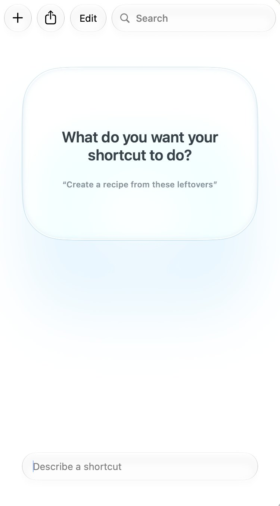

Apple Shortcuts
Shortcuts is the automation app on every iPhone, iPad and Mac. Make a new shortcut, describe what you want it to do in plain words, and Shortcuts builds it for you with Apple Intelligence. Then you check it and tweak it, the way you would anything an AI makes. In the Shortcuts and Claude session, it is the Round 1 tool.
Best for
A routine you repeat, with an AI step in the middle. Small, personal, and on the device you already teach with.
Start here
The Shortcuts app, on a Mac, iPad or iPhone with Apple Intelligence turned on. Describing a shortcut also needs an internet connection.
Open Shortcuts, press +, and describe a shortcut once. The first time, Shortcuts may need to prepare it.
This guide is a draft. Screenshots marked “to come” are still to be taken, and anything tagged TBC still needs checking.
Exercise 1: Describe your shortcut
The worked example is Summarise. It turns a meeting transcript into tidy notes. You describe it, and Shortcuts assembles the actions.

- In Shortcuts, press + to make a new shortcut. It asks: What do you want your shortcut to do?
- In Describe a shortcut, at the bottom, type what you want, as in the description below. Then press Return.
- Wait while Shortcuts assembles the actions. If your description could mean more than one thing, it asks you a question first.
Make a shortcut that takes the text on my clipboard, uses the on-device Apple Intelligence model to turn a meeting transcript into notes with a title, the date, Key Points, Discussion and Actions, and saves the notes as a new note in my Transcribed folder in Notes.
Not yet tested. TBC
A good description says three things
- What goes in. The text you copied, a photo, a file, or something the shortcut asks you for.
- What Apple Intelligence does with it. Summarise it, rewrite it for Grade 5, or turn it into questions.
- Where the result goes. A note, a message, a file, or the screen.
There is a daily limit on describing shortcuts. If you reach it, build the shortcut by hand: search the list of actions for each one in Figure 2, and add them in order.
Exercise 2: Check it, and tweak it
What Shortcuts builds is a first draft. Compare it with Summarise as the presenter finished it, in Figure 2, and make it yours. The blue words in each action are the parts you can change: click or tap one.
![The finished Summarise shortcut in the Shortcuts app on a Mac, as five actions in a column. Get clipboard. Wait 1 second. Use On-Device model, with a long prompt: format notes from a meeting, here is the transcript, then the Clipboard variable, then a title and the date, a Key Points section of three to six bullets, a Discussion section of two or three short paragraphs, and an Actions section listing who agreed to do what and by when, with None recorded if nothing was agreed, all based on the transcript. Set variable Summary to Response. Create note with Summary in the Transcribed folder.](images/shortcuts/summarise.jpg)
- Click or tap the name at the top, and call it Summarise.
- In Use Model, choose On-Device, so the transcript stays on your device.
- Replace the prompt in Use Model with the one below. It says exactly what the notes should contain.
- Check that the Clipboard variable is in the prompt, so the model gets the transcript itself.
- In Create Note, choose the Notes folder to save in. Here it is Transcribed.
You are helping format notes from a meeting I attended.
Here is the transcript:
Clipboard
Write the notes as follows.
Start with a short title of about six words describing the meeting, then the date.
Then a section called Key Points, with three to six bullets covering decisions and conclusions reached.
Then a section called Discussion, two or three short paragraphs on what was debated and what was left open.
Then a section called Actions, listing who agreed to do what and by when. Write “None recorded” if nothing was agreed.
Base everything on the transcript. Where the transcript is unclear, leave it out.
After you paste it, delete the word Clipboard and insert the Clipboard variable in its place.
If an action is missing, search for it in the list of actions and add it. If one isn’t needed, delete it.
Exercise 3: Run it on a transcript
Use the transcript of a real meeting, or a short one you write for practice.
Screenshot to come
The finished note in Notes: the title, the date, Key Points, Discussion and Actions.
- Copy the transcript.
- Run Summarise: press the play button.
- Open Notes. Your notes are in the Transcribed folder.
Make the Transcribed folder in Notes before you run the shortcut, or choose a folder you already have.
On-Device means the model runs on your own device, with no internet connection needed, so the transcript stays on it. Still, check the notes against what was said before you share them.
Exercise 4: Describe a change
You can tweak a shortcut with words, too. Describe one change, and Shortcuts makes it. It is the session’s Push it step: substitute, combine or eliminate one thing. Then check what changed, as in Exercise 2.
Screenshot to come
Summarise open, with a change typed in the box at the bottom, marked 12.
- Open Summarise. In the box at the bottom, type one change, such as one of these. TBC
- Check the actions it changed, then run it again on your transcript.
Ask me which Notes folder to save the notes in, instead of always using Transcribed.
After saving the note, also email the notes to me.
Leave out the Discussion section of the notes.
Push it further
Change one thing at a time, and run the shortcut after each change.
Turn this reading into three questions for Grade 7 students, with the answers underneath.
Put this in Use Model instead of the meeting prompt, with the Clipboard variable after it. Copy a reading, and run it.
- Turn on Follow Up in Use Model. You see the model’s answer, and can ask for changes, before it goes to the next action.
- For a long transcript, or a harder job, choose a cloud model instead of On-Device. Shortcuts’ own help describes these as large models on Apple’s Private Cloud Compute servers, for complex requests. There is a daily limit on them, and Cloud Pro needs iCloud+.
- On a Mac, use Pin in Menu Bar or Add Keyboard Shortcut, in Shortcut Details. On an iPad or iPhone, use Add to Home Screen.
Videos
Videos to come. Each one will load only when you press play.
Video to come
Describe a shortcut: let Shortcuts build it for you.
Why it is worth watching. TBC
Video to come
Use Model: Apple Intelligence in your shortcuts.
Why it is worth watching. TBC
Video to come
Running shortcuts from the menu bar, the Home Screen and Siri.
Why it is worth watching. TBC